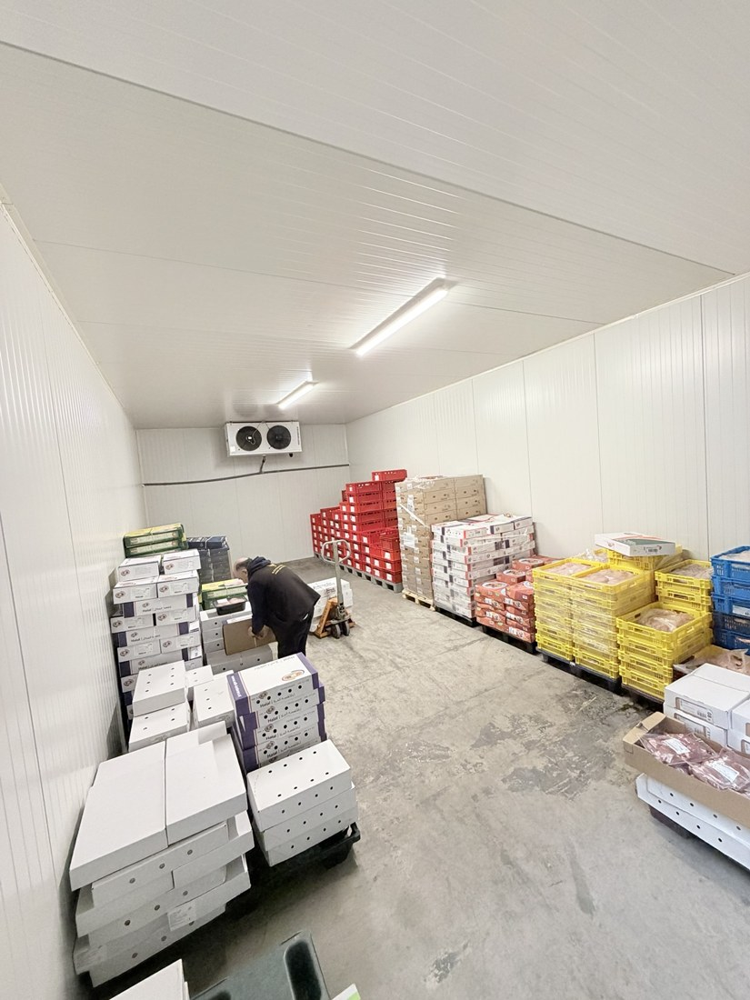
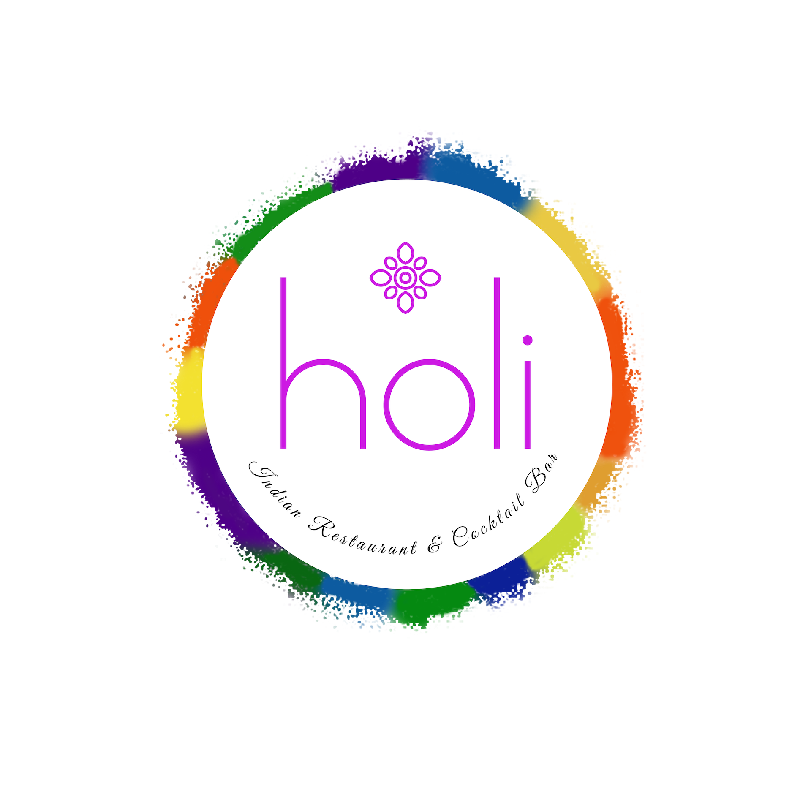

Seit 2013 beliefern wir Restaurants, Imbisse, Supermärkte und Großküchen in ganz Nordrhein-Westfalen mit Fleisch, Geflügel, Eiern und ausgewählten Lebensmitteln.
TDB Food steht für zuverlässige Belieferung, Halal-Qualität und einen direkten Ansprechpartner für Gastronomie, Handel und Lebensmittelmärkte.
Gut sichtbarer Schwerpunkt für Kunden, die Wert auf halal-konforme Fleischprodukte legen.
Lieferung in Köln, Bonn, Düsseldorf, Essen, Dortmund, Aachen und weiteren Städten.
Schnelle Abstimmung, direkte Anfrage und persönliche Betreuung über Mobilnummer.

Unser Kühlhaus, unsere Fahrzeuge und unsere Erfahrung bilden die Grundlage für eine zuverlässige Belieferung unserer Kunden.
Jungbulle, Kalb, Lamm, Geflügel, Pute, Eier und ausgewählte Lebensmittel für den täglichen Bedarf.
Kugel, Brust, Entrecôte, Roastbeef, Schulter und weitere Zuschnitte.
Schulter, Keule, Kotelett, Hals, Rippen und weitere Produkte.
Hähnchen, Pute, Brust, Keule, Flügel, ganze Hähnchen und Eier.
Wir beliefern Gastronomie, Lebensmittelmärkte und Großküchen in ganz NRW – mit Schwerpunkt Köln, Rheinland und Ruhrgebiet.
Ein Auszug aus Gastronomie und Handel in Köln.

Indische Küche & Cocktailbar
Japanische & asiatische Spezialitäten
Orientalische Spezialitäten
Für Bestellungen und Angebote ist WhatsApp der schnellste Weg. Alternativ erreichen Sie uns per Telefon oder E-Mail.
Festnetz: 0221 29100919
WhatsApp: 0176 24115839
E-Mail: info@tdb-food.de